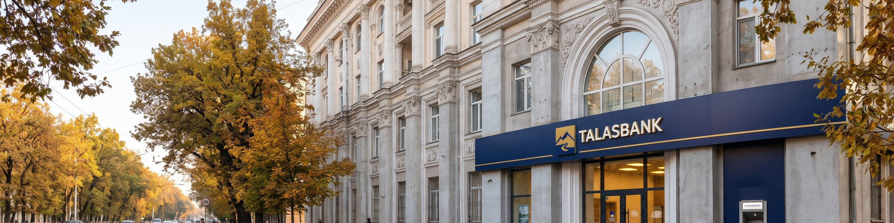
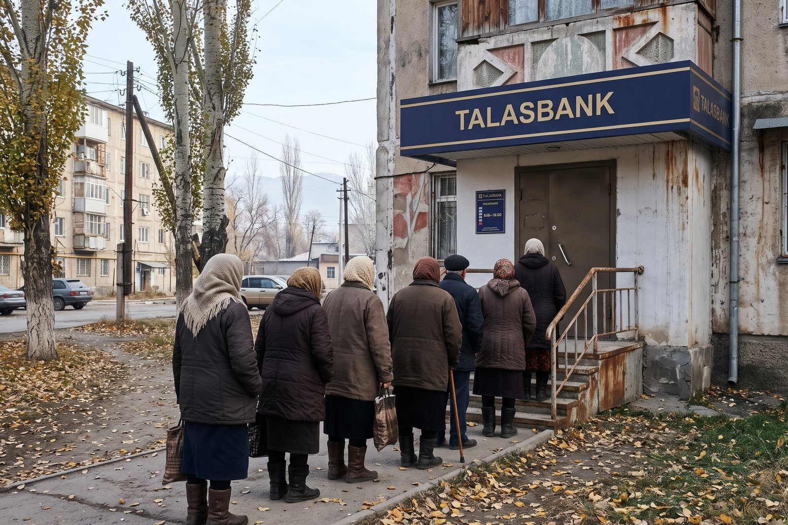
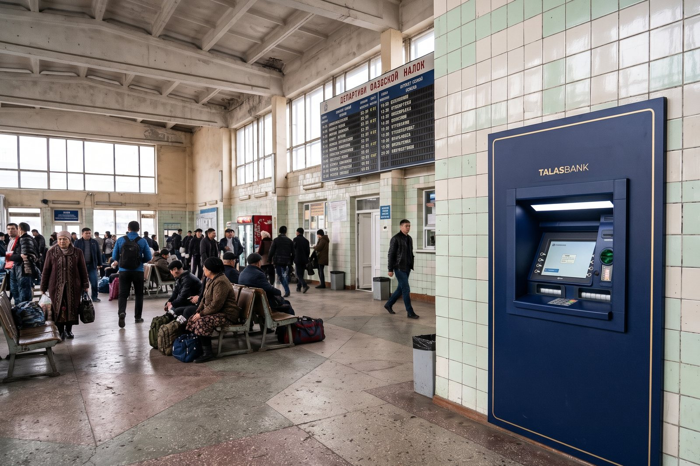
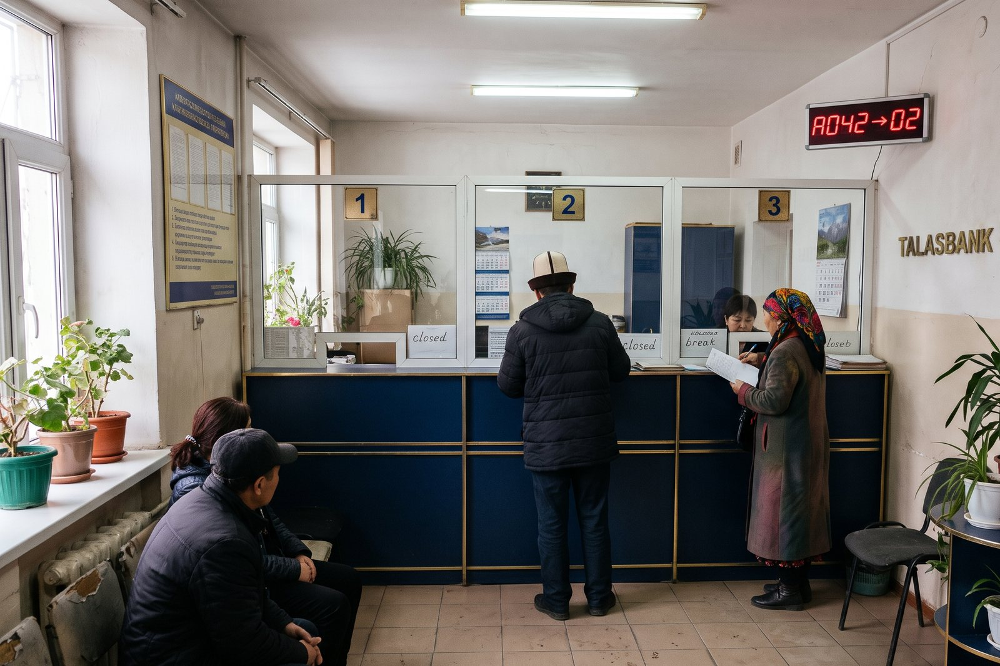

Talasbank Pinned
10 November is pension day. Take a ticket in the electronic queue at talasbank.net before you come. Branches open at 08:00 that day.
♥ 41 · Comment · Share
The Bank of Talas. Since 1993.
10 November is pension day. Take a ticket in the electronic queue at talasbank.net before you come. Branches open at 08:00 that day.
♥ 41 · Comment · ShareSalary and pension payments, cash machines across the Zone
For dollar accounts
For staff of companies that pay through Talasbank
10 November is pension day. Take a ticket in the electronic queue at talasbank.net before you come. Branches open at 08:00 that day.
♥ 41 · Comment · ShareRates and conditions on talasbank.net and in every branch.
Salary and pension payments, cash machines across the Zone
For dollar accounts
For staff of companies that pay through Talasbank
Within Irad, and SMS transfers to the Lower Naryn posts
Official rates of the day
Internet banking at ib.talasbank.net
Talasbank ✓ТаласбанкTalasbank ✓ТаласбанкTalasbank ✓ТаласбанкTalasbank ✓ТаласбанкTalasbank ✓ТаласбанкTalasbank ✓ТаласбанкTalasbank ✓ТаласбанкTalasbank ✓ТаласбанкTalasbank ✓ТаласбанкTalasbank ✓ТаласбанкTalasbank ✓ТаласбанкTalasbank ✓ТаласбанкTalasbank ✓ТаласбанкTalasbank ✓ТаласбанкTalasbank ✓ТаласбанкTalasbank ✓ТаласбанкTalasbank ✓ТаласбанкTalasbank ✓ТаласбанкTalasbank ✓ТаласбанкTalasbank ✓ТаласбанкTalasbank ✓ТаласбанкTalasbank ✓ТаласбанкTalasbank ✓ТаласбанкTalasbank ✓ТаласбанкTalasbank ✓ТаласбанкTalasbank ✓Таласбанк10 November is pension day. Take a ticket in the electronic queue at talasbank.net before you come. Branches open at 08:00 that day.
♥ 41 · Comment · Share10 November is pension day. Take a ticket in the electronic queue at talasbank.net before you come. Branches open at 08:00 that day.
♥ 41 · Comment · ShareЛимит на снятие наличных долларов остаётся 300 долларов в месяц.
♥ 40 · Comment · ShareTalasbank, the Bank of Talas, since 1993. Pensions, transfers, cards, currency exchange and the electronic queue. Rates, branch hours and the queue ticket on talasbank.net.
Таласбанк с 1993 года. Пенсии, переводы, карты, обмен валют. Курсы и электронная очередь на talasbank.net.
| Branches | 28: 20 in Talas, 6 in Nurzhan, 2 in Iyık Janyl |
|---|---|
| Cash machines | 74 |
| Licence | Bank of Irad No. B-001 |
28 locations on Kartalar: Talas 20, Nurzhan 6, Iyık Janyl 2.
Higher education in economics or finance. Iradi and Russian; English an advantage.
Electronics background, driving licence B.
To apply: send your CV through the Message button or come to the office.

The Azatlık branch on pension day morning
A Talasbank cash machine in the bus station
Tellers' windows in a Talas branchТри часа в очереди 10-го числа. Талончик из интернета не работает.
Fast on normal days. Never come on the 10th.